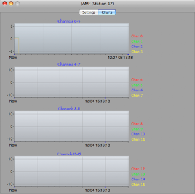
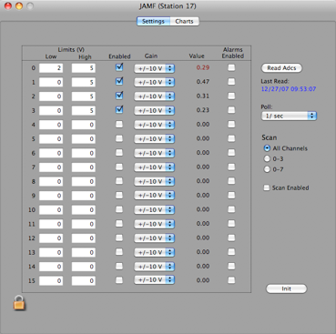

Joerger ADC AM-F



For a complete description, please refer to the manual.
Data Records (NOT!)
The JAM-F is not officially an ORCA data taker. Thus, there are no data records associated with this hardware object at this time. This card can participate in the Process Controller as an ADC element.
Set the Low and High limits. Values out of range can trigger an ORCA Alarm if the alarm for that channel is enabled.
Set up an optional polling interval

Set the ADC range, Read back limits or adc values to the status log

Load this dialog’s values into hardware

Plot the ADC values over time in groups of four
Enable/Disable scanning and select which channels to scan